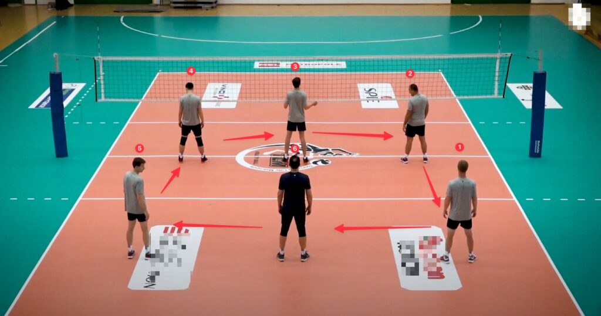
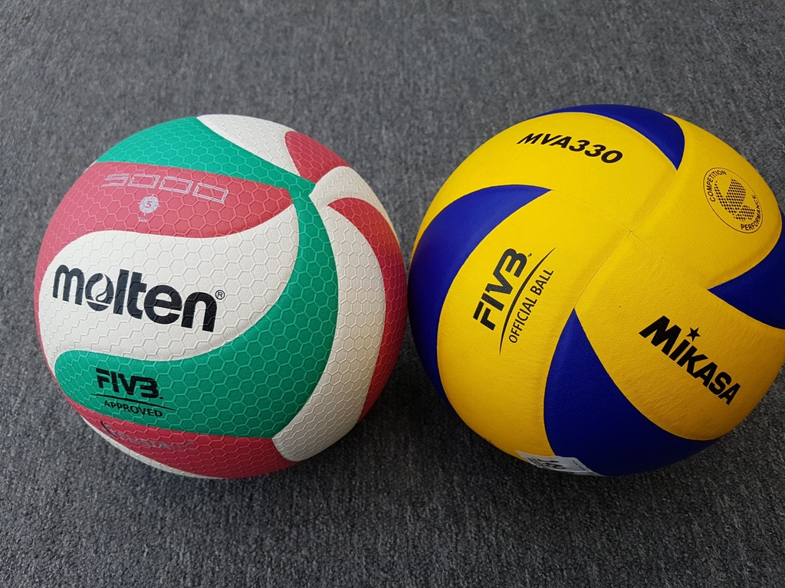
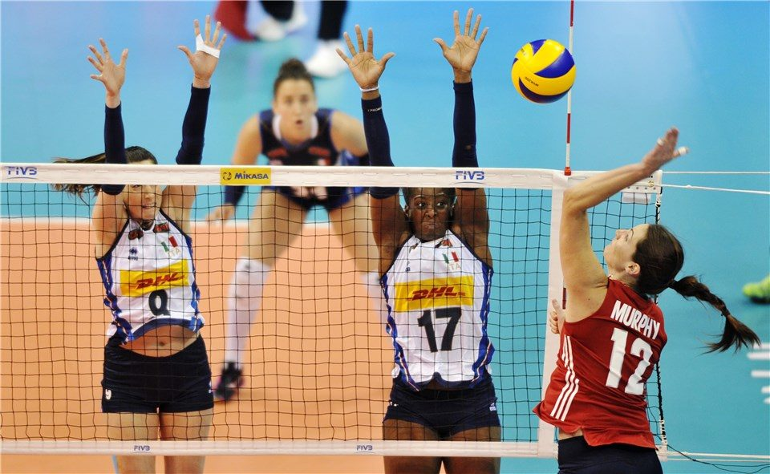
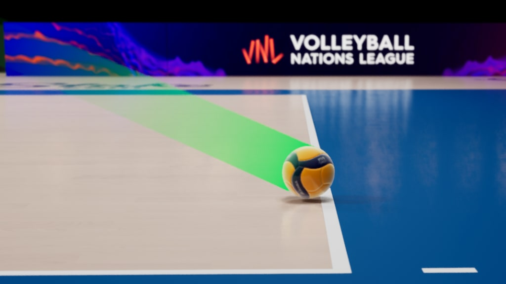
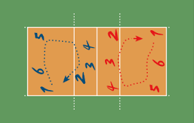

Reglas del Voleibol
El voleibol tradicional (o voleibol de cancha) tiene un conjunto de reglas establecidas por la Federación Internacional de Voleibol (FIVB) que regulan cómo se debe jugar. A continuación te presento un resumen de las reglas principales:
Composición del equipo
- Cada equipo tiene seis jugadores en la cancha.
- Los jugadores se colocan en dos filas: tres en la zona delantera (cerca de la red) y tres en la zona trasera.
- Puede haber jugadores suplentes y un jugador especial llamado líbero, que tiene funciones defensivas y lleva un uniforme diferente.
El balón
El balón es esférico, con una circunferencia de 65-67 cm y un peso de 260-280 gramos. Está hecho de cuero o material sintético y debe tener buena elasticidad.
Algunas marcas populares que fabrican balones de voleibol aprobados por la FIVB son:
- Mikasa (como el modelo V200W para cancha y VLS300 para playa).
- Molten (muy usado en competiciones de alto nivel).
Toques permitidos
Cada equipo puede tocar el balón un máximo de tres veces antes de enviarlo al campo contrario. Por ejemplo, un jugador puede recibir, otro puede colocar y el tercero puede rematar. Estos toques deben ser limpios, sin que el balón sea atrapado o lanzado. Sin toques consecutivos: Ningún jugador puede tocar el balón dos veces seguidas, excepto si el primer toque es un bloqueo.
Puntuación
El sistema de puntuación es el Rally Point System: Esto significa que se gana un punto en cada jugada, independientemente de quién tenga el saque. Se otorga un punto al equipo que logre que el balón toque el suelo del lado contrario o si el equipo rival comete una infracción (como tocar la red o hacer un pase ilegal).
Rotación
Cuando un equipo gana el derecho a sacar tras anotar un punto, todos los jugadores giran sus posiciones en sentido de las agujas del reloj. Por ejemplo:
- El jugador de la posición 2 pasa a la posición 1 (para sacar).
- El jugador de la posición 1 pasa a la posición 6.
- Y así sucesivamente.
Esta rotación asegura que todos los jugadores participen en diferentes roles ofensivos y defensivos durante el partido.